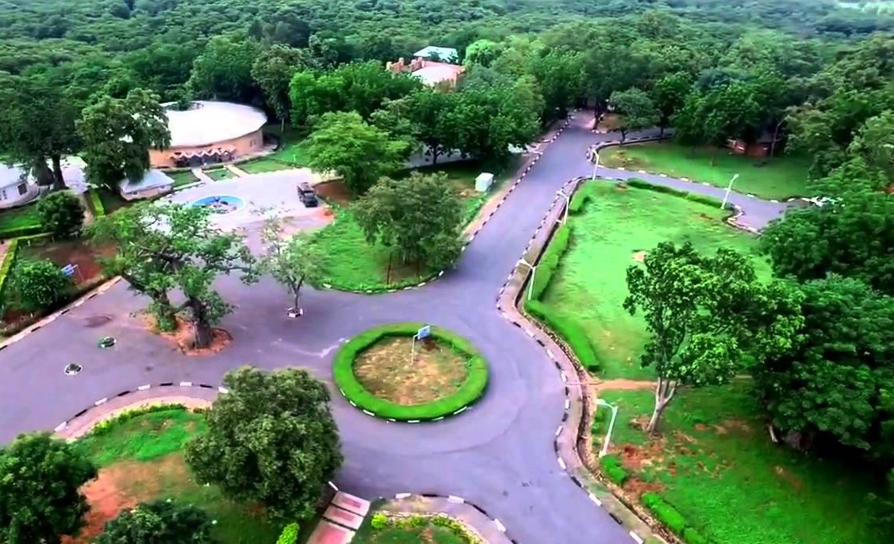

<<<<<<< HEAD
index.html
=======
<!DOCTYPE html>
<html lang="en-US">
<head>
    <meta charset="UTF-8">
    <meta name="viewport" content="width=device-width, initial-scale=1.0">
    <title>Magdalene Shehu | WDD 130</title>
    <meta name="description" content="Magdalene Shehu's BYU Idaho WDD 130 course home page">
    <meta name="author" content="Magdalene Shehu">
    <link rel="stylesheet" href="styles/styles.css">
</head>

<body>
    <header>
        <nav>
            <a href="index.html">Home</a>
            <a href="wwr/">White Water Rafting Website</a>
            <a href="wwr/site-plan-rafting.html">White Water Rafting Site Plan</a>
        </nav>
    </header>

    <main>
        <h1>Magdalene Shehu | WDD 130</h1>
        
        <p>Hello! My name is Magdalene Shehu. I am from Bauchi, Nigeria. I enjoy outdoor activities.</p>
    </main>

    <aside>
        <h2>Bauchi</h2>
        
        <p>Yankari Game Reserve is a large wildlife park and former National Park located in the south-central part of Bauchi State, in northeastern Nigeria. It is one of the most popular tourist destinations in Nigeria and is known for its warm springs, wildlife, and natural beauty.</p>
    </aside>

    <footer>
        <p>©2026 Magdalene Shehu | Bauchi, Nigeria</p>
    </footer>
</body>
</html>
>>>>>>> 88894c6 (Fix image source case sensitivity in index.html)
